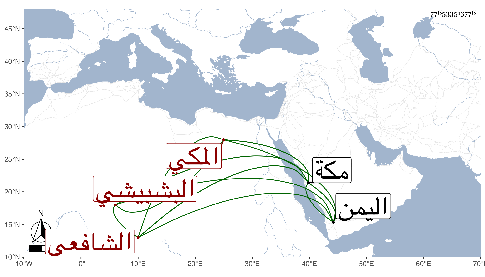

0902Sakhawi.DawLamic.ITO20230111-ara1.EIS1600.776533513776
Biography ID: 776533513776
343
محمد بن محمد بن عبيد بن محمد فتح الدين أبو الفتح بن الشمس البشبيشي الأصل المكي الشافعي الماضي أبوه . ولد في رجب سنة تسع وسبعين وثمانمائة بمكة ونشأ فحفظ القرآن وأربعي النووي والجرومية والرحبية والبعض من المنهاج وجمع الجوامع والشاطبية وتدرب بأبيه في البخاري بحيث أتقن قراءته مع صغر سنه وكذا قرأ باليمن حين دخلها مع أبيه علي الشرجي وعرض عليه بعض محافيظه وتكرر دخوله لها مع أبيه وكان قد سمع مني بمكة في سنة ست وثمانين وبعدها بل قرأ علي في سنة ثلاث وتسعين بها إلى أثناء الزكاة من صحيح البخاري قراءة أبدع فيها ثم أكمله مع صحيح مسلم وغيره وسمع علي أشياء كثيرة رواية وفي البحث وهو نادرة في قراءته مع صغر سنه ذو فطنة وذكاء يحفظ بعض غريب ومبهم وفقه الله وزاد في إصلاحه .
